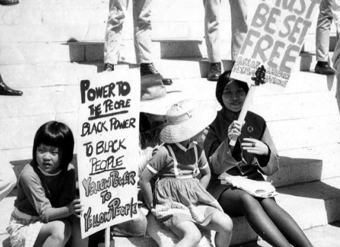

-
Telling Untold Stories
The Immigrant History Initiative seeks to educate and empower communities through the untold stories of immigrant diasporas in America.The Immigrant History Initiative is a non-profit organization founded in 2017. The organization produces curriculum focused on immigrant histories and works with schools and communities to establish courses sharing this knowledge. We also provide teaching and course development support in partnership with other organizations bringing immigrant histories into the mainstream.
 -
Pilot Project Success!
Immigrant History Initiative Co-Founders Julia Wang and Kathy Lu were presented in 2018 with the Outstanding Service Award for our pilot Chinese American History program at New Haven’s Southern Connecticut Chinese School!Spanning four terms and reaching over forty students, the IHI pilot course has contributed something both novel and deeply needed to the traditional Chinese school class roster. Our students engage in a variety of topics from the personal to the political, conducting oral history projects with their families while learning important stories behind the transcontinental railroad, Chinese exclusion, and pan-ethnic community building.

-
Curriculum for New PBS Series
We are excited to announce a new partnership with Asian Americans Advancing Justice Los Angeles and PBS to produce curriculum for the upcoming PBS series, The Asian Americans.The Asian Americans series is designed to engage the American public about the evolving identity, contributions, and challenges experienced by the nation’s fastest growing racial group. We will help develop lesson plans that accompany the PBS episodes for high school, middle school, and elementary school students. The Asian Americans is scheduled to begin airing May 2020.
-
Big Congrats to Our Teachers!
Our New Haven Chinese American History pilot program wouldn’t be possible without our amazing volunteer teachers from Yale University! In May 2019, they received much- deserved recognition from the Yale Asian American Cultural Center (AACC) for their work on the pilot program.The Yale Immigrant History Project, led by co- presidents Rita Wang and Alex Wang, are the recipients of the inaugural AACC Exemplary Social Justice Contribution award. Thank you for your commitment and your diligence!
-
Writing Asian American stories
For API Heritage Month, NBC Asian America profiled the Immigrant History Initiative and other groundbreaking organizations across the country that are passionate about “writing Asian American stories back into history books.” Read about the innovative projects spearheaded by IHI and our allies in the article hereAdvocates all around America have been fighting to get these marginalized narratives into schools for years, and we are making new strides every day. To support our efforts to empower communities through knowledge, consider making a donation here!